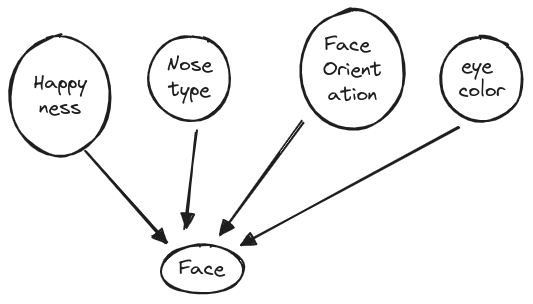
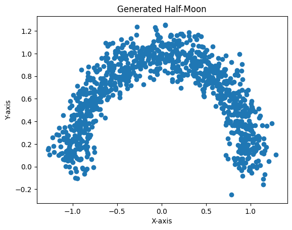

Generative Modeling and Approximate Inference#
Introduction#
We have seen in the treatment of CNNs that they can generate features that are suitable for the classification or regression task at hand using the labels to guide the maximization of the log-likelihod function or loss function. Here we are looking at the problem where we need features that are suitable for generating data from the input distribution without necessarily having labels.
After reviewing the premise of generative modeling via what we will call deep latent variable models, we will look at the problem of inference of the latent space that is suitable for generating data. We will see that this problem is intractable and we will introduce the variational inference method that will allow us to approximate the posterior distribution of the latent space.
The method that we will dive into is called Variational Autoencoder (VAE) that is used across various domains, including collaborative filtering, image compression, reinforcement learning, and generation of content such as music and images. VAEs can also serve as the base to understand Stable Diffusion Models (SDMs) that are used in the generation of images and videos.
We will focus on continuous VAEs in this edition of the course.
Why generative modeling is useful#
More formally, in generative modeling we want to model the generative distribution of the observed variables \(\mathbf x\), \(p(\mathbf x)\) [1].
Take for example a set of images that depict a pendulum excited by a force. We would like to generate the successive frames of the pendulum swinging behavior and we do so we are assisted by a set of latent variables \(\mathbf z\) that represent the underlying laws of physics. Generative modeling is especially well suited for:
Testing out hypotheses about the underlying rules that generated the observed data. Such rules can also offer interpretable models.
Ability to capture causal relationships, since the ability of a factor to generate data very close to the ones observed, offers a strong indication of such relationship.
Semi-supervised learning where the generated data are very close to already labeled data and therefore can improve classification model accuracy.
Variational Inference#
One of the main methods of generative approximate inference is variational inference that originates from calculus of variations. To understand how this calculus differs from the one we are used to, consider how the standard calculus using the derivative of a function is able to optimize it and calculate its minimum. In a similar way, in calculus of variations we are able to optimize a functional. A functional in mathematics is a mapping from a function space to the real numbers - just like the function is a mapping from a real number (the argument) to a real value (the result of the function evaluation).
The concept of a functional can be illustrated with the definition of entropy, in the context of information theory.
Shannon entropy, denoted as \(H\), is a measure of the uncertainty or randomness in a probability distribution. It’s defined for a discrete probability distribution \(P = (p_1, p_2, \ldots, p_n)\), where \(p_i\) is the probability of the \(i\)-th outcome. The entropy is defined as:
Here, \( H \) is a functional because it maps the function (in this case, the probability distribution \(P\) to a real number, which represents the entropy of \(P\).
The calculus of variations is concerned with finding the function that maximizes a functional. In the case of entropy, the function that maximizes the entropy is the uniform distribution, where all the outcomes have the same probability. This is intuitive, because if all the outcomes have the same probability, then we have the most uncertainty about the outcome.
The Variational Generative Modeling Problem#
VAE is one of the answers to the aforementioned variational optimization problem. But before dive into optimization what is this modeling problem exactly i.e what constitutes our objective ?
In probabilistic modeling, we usually make use of latent variables \(\mathbf z\), that are not observed but can be used to build suitable representational constraints in our models, and a set of parameters \(\theta\) that parametrize the latent variable model \(p(\mathbf x, \mathbf z | \mathbf \theta)\).
As an example, lets think of the problem of gerating realistic images of people. We can think of the problem as a two step process:
Think of what factor make a person a real one. For example, can we have a person without a head (assume we are interested in living humans) ? Lets call the headedness factor a latent variable and similarly specify the other factors grouping them together into a set of rendom variables that we will call \(\mathbf z\), captured via their distribution \(p(\mathbf z | \theta)\).
Generate an image from the latent representation. This is a process that takes the latent representation and generates an image of the person (hopefully realistic).
Since,
to generate new data whose marginal is ideally, identical to the true but unknown target distribution we need to be able to sample from \(p(\mathbf x, \mathbf z | \mathbf \theta)\). Equivalently, after applying the prodcut rule we have:
The elements of this model are \(p(\mathbf x| \mathbf z ; \mathbf \theta)\) and the \(p(\mathbf z | \theta)\) that is often called the prior distribution over \(\mathbf z\).
Note that for continuous variables, the sum is replaced by an integral.
Note
Probabilistic Graphical Models
A graph representation, the Probabilistic Graphical Model (PGM) (also called Bayesian network) can be used to capture dependencies between the random variables involved in the modeling of a problem. We can use such representations to efficiently compute conditional probabilities using the graph to identify the conditionally independent random variables that are present in our problem.
By convention, we represent PGMs as directed graphs, with nodes being the random variables involved in the model and directed edges indicating a parent child relationship, with the arrow pointing to a child, representing that the child nodes are probabilistically conditioned on the parent(s). We have assumed that our model does not have variables involved in directed cycles and therefore we call such graphs Directed Acyclic Graphs (DAGs).
In a hypothetical example of a joint distribution with \(K=7\) random variables,

The PGM above represents the joint distribution \(p(x_1, x_2, ..., x_7)=p(x_1)p(x_2)p(x_3)p(x_4|x_1, x_2, x_3)p(x_5|x_1, x_3) p(x_6|x_4)p(x_7|x_4, x_5)\). In general,
where \(\mathtt{pa}_k\) is the set of parents of node \(x_k\).
An example is now in order for us to be able to ground the discussion up to now. In our attempt to generate realistic images of people’s faces we may consider a number of latent factors that can affect the image.

The shown latent factors are grouped together into a latent vector \(\mathbf z\), without an explicit semantic (or interpretable) mapping of each factor to the corresponding dimention of the \(\mathbf z\) vector. Further, we will assume that although there is an underlying structure, for example the happyness and face orientation are correlated since people when they laugh they tend to lift their chin up, such structure will not be explictly captured a priori. To map this application to what were presenting as the generative PGM, the happyness and other latent factors are captured by a simple to generate Gaussian prior distribution:
Using a PGM we can represent the generative model we are concerned with, as shown below:

Probabilistic Graphical Model showing the model governing the generation of \(m\) samples from the probability distribution \(p(\mathbf x|\theta)\) - ref
We will then use a neural network to create the right structure instead of explicitly encoding it in the prior.
This is not a new idea - sampling from a complex probability distribution can be achieved by feeding samples from a simple distribution to a suitably chosen function. In the example below, the a function is used to change the mean of the standard normal distribution to generate a half-moon shape.
import numpy as np
import matplotlib.pyplot as plt
def generate_half_moon(num_points, radius, width):
# Generate points on a circle
theta = np.linspace(0, np.pi, num_points)
x_circle = radius * np.cos(theta)
y_circle = radius * np.sin(theta)
# The function changes the mean of the standard normal distribution
x_noisy = x_circle + np.random.normal(0, width, num_points)
y_noisy = y_circle + np.random.normal(0, width, num_points)
# Combine x and y coordinates
half_moon_points = np.column_stack((x_noisy, y_noisy))
return half_moon_points
# Example usage:
half_moon_data = generate_half_moon(num_points=1000, radius=1.0, width=0.1)
plt.scatter(half_moon_data[:, 0], half_moon_data[:, 1])
plt.xlabel("X-axis")
plt.ylabel("Y-axis")
plt.title("Generated Half-Moon")
plt.show()

The neural network is abstracting such function and we can now see a path to implemeting the aforementioned generator,
by assuming that the conditional distribution \(p(\mathbf x| \mathbf z ; \mathbf \theta)\) is parameterized by a neural network that takes as input the latent vector \(\mathbf z\) generated itself by the prior distribution and outputs the image \(\mathbf x\).
In the case that the \(p(\mathbf x| \mathbf z ; \mathbf \theta)\) is Gaussian, this will mean:
where \(\mu(\mathbf z; \mathbf \theta)\) is the output of the neural network that is parameterized by \(\mathbf \theta\). Note that the variance of the Gaussian is fixed, is a hyperparameter and is not a function of \(\mathbf z\).
Note that the \(p(\mathbf x| \mathbf z ; \mathbf \theta)\) can be any distribution and obviosuly this distribution need to match the nature of what we try to generate. If \(\mathbf x\) is binary then this can be a Bernouli distribution with the parameter(s) of the distribution given at the output of the neural network.
The Optimization Problem and Objective#
However there is a problem with this generator. Even with neural networks “designing” the right features in the latent space [2], we are still facing a very heavy computationally problem in trying to estimate the marginal distribution \(p(\mathbf x | \mathbf \theta)\).
To understand why, consider the MNIST dataset and the problem of generating handwritten digits that look like that. We can sample from \(p(\mathbf z | \theta)\) generating a large number of samples \(\{z_1, \dots , z_m\}\), and with the help of the neural network sample and compute \(p(\mathbf x) = \frac{1}{m} \sum_i p(\mathbf x|z_i)\).
The problem is that we need a very large number of such samples in high dimensional spaces such as images (for MNIST is 28x28 dimensions) . Most of the samples \(\mathbf z_i\) will result into negligible \(p(\mathbf x|z_i)\) and therefore won’t contribute to the estimate of the \(p(\mathbf x)\).
This is the problem that VAE addresses. The key idea behind its design is that of inference of the right latent space such that when the \(\mathbf z\) when sampled, it results into a \(\mathbf x\) that is very similar to that of our training data. VAE in other works buys us sample efficiency allowing computation and optimization of the objective function with far less effort than before.
References#
[1]: Diederik Kingma and Max Welling. Auto-Encoding Variational Bayes. In International Conference on Learning Representations, 2014, https://arxiv.org/abs/1312.6114
[2]: Yuri Burda, Roger Grosse, Ruslan Salakhutdinov. Importance Weighted Autoencoders. In International Conference on Learning Representations, 2015, https://arxiv.org/abs/1509.00519